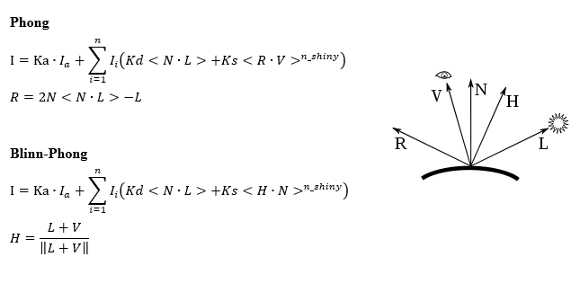
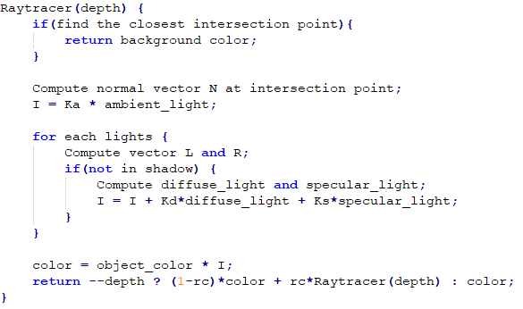
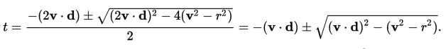
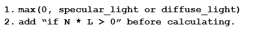

1).The ray direction emitted from your eyes should be set properly, otherwise the final image seem to be distorted. (x/width, y/width, 1)
2).When calculating the closest intersection point, we should pick the
minimum one between two possible results.

3).Don't forget to consider the shadow part, there are two ways:

4).Before calculating vector H in Blinn_Phong Model, L and V should
be normalized first.
1).Phong vs Blinn_Phong: the highlights of Blinn_Phong looks larger than those of Phong, however, the main difference is reflected in the overall effect - Blinn_Phong appears to be more natural. Due to the color I set, it's not very obvious like wiki's
2).Recurision depth: as the images dipicted, the reflection of the red sphere on the blue sphere appears only when depth greater than 1.
3).ka, kd, ks, n_shiny, rc:
4).More lights: More lights bring more highlghts and of course shiner spheres.
This experiment is somewhat harder than the previous one. However the harder part is neither the light model nor the ray tracing algorithm, it's the detail, because there are many details you'll never even notice while it's easy for us to figure out how the light model or the algorithm works. Some details has been mentioned at 'Implementation Details' and still there are many of them not mentioned. Just like the words my teacher (@Baoquan Chen) said at last class, 'Evils are in the Details', though not the same thing.